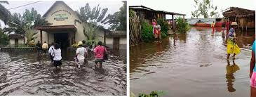

Tropical Cyclone Francisco
over Madagascar!.
Tropical Cyclone Francisco was approaching landfall on Madagascar on 13th of February 2020 and became a strong
cyclone passing over the east part of Madagascar (where we are living) on 15th of February.
It had been raining a lot during the whole previous night. As a result, there were a lot of damages in the city
where I am, which is in Mahanoro.
The city was in the water!
Up to now, there is a lot of water everywhere!
This is what was seen in Catholic church in Mahanoro last Sunday.
Some people could hardly step out because their houses were surrounded by water. The roads became rivers too.

Because of the strong wind on Saturday, a few boats had been brought away from their places.
It was kind of a hard work to look for them in the ocean because some of the were found far away from Mahanoro.
The residence on the beach waiting for the boats coming back.